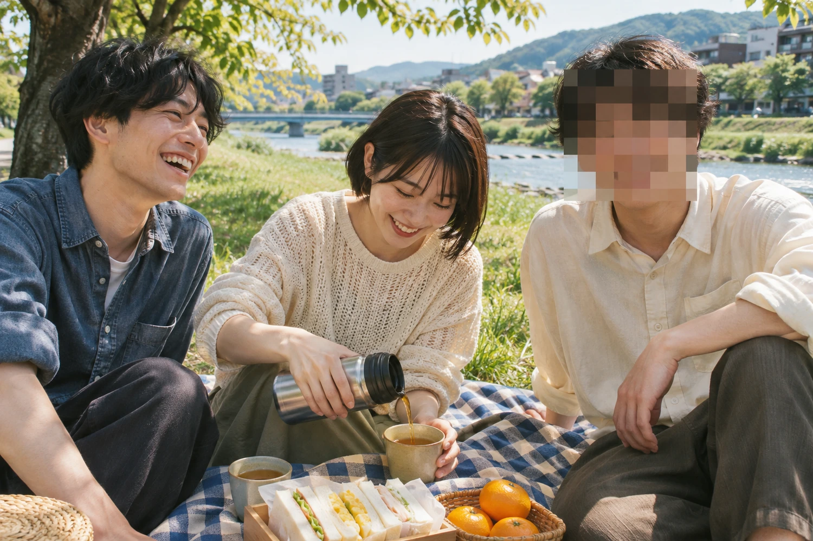
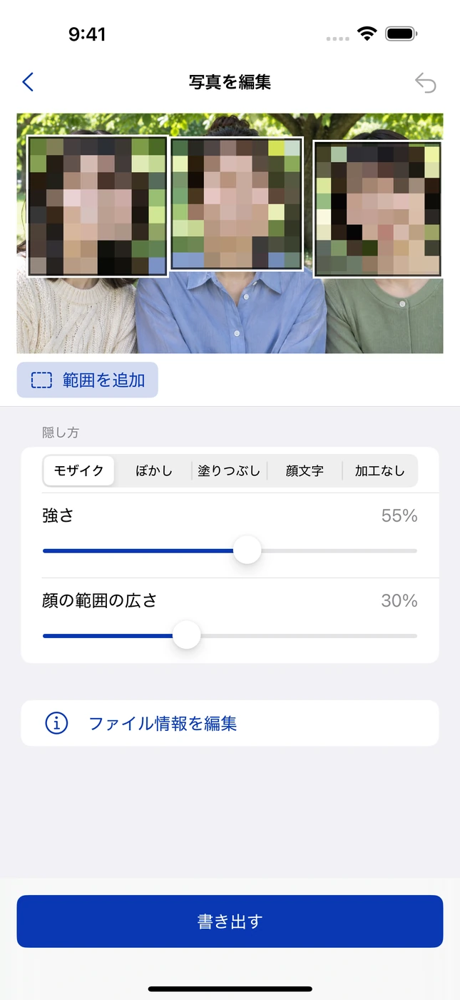
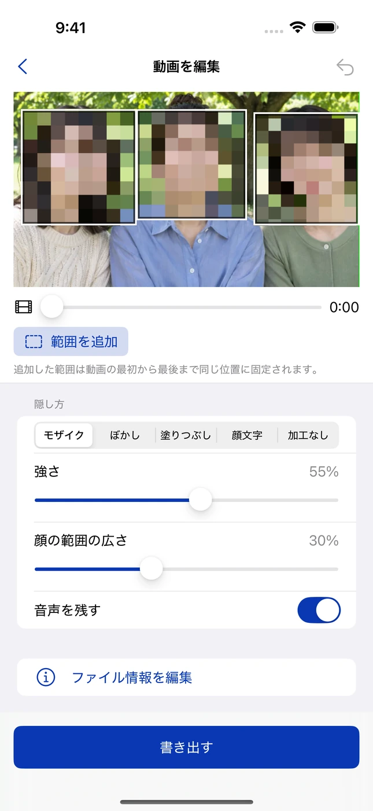

撮った場所が相手に伝わりませんか？
スマートフォンで撮った写真や動画には、撮影した場所の緯度・経度が記録されていることがあります。Mosaicでは、保存するときに位置情報を取り除くのが初期設定です。
旅行の記録などで場所を残したいときは、地図で地名や住所を検索して、記録する位置を選び直せます。
- 初期設定
- 位置情報を取り除く
- 場所を残すとき
- 地図で検索して位置を選ぶ
iPhone・iPad用アプリ
川辺のピクニック、サークルの打ち上げ、子どもの運動会。みんなで撮った写真をSNSやグループのアルバムに載せる前に、写りたくない人の顔だけを隠せるアプリです。

写真の使い方
写真を開くと、見つかった顔にはすでにモザイクがかかっています。そこから顔を出してもいい人だけを外していくので、隠し忘れが起きにくい順番です。隠し方はモザイクのほか、ぼかし・顔文字・色の塗りつぶしからも選べます。
共有したい写真を選ぶと、編集画面が開きます。
顔を出してもいい人の顔をタップすると、その人のモザイクが外れます。
横顔や遠くに小さく写った人など、うまく見つからなかった顔は、範囲を手動で指定して隠せます。名札や車のナンバーのように、顔以外に隠したい所にも使えます。
仕上がりを確かめてから保存します。

動画
動画内で見つけた顔を追跡し、顔の動きに合わせてモザイクが移動します。通りすがりの人が映り込んだ旅行の動画や、発表会の様子を共有したいときに。

保存と共有
スマートフォンで撮った写真や動画には、撮影した場所の緯度・経度が記録されていることがあります。Mosaicでは、保存するときに位置情報を取り除くのが初期設定です。
旅行の記録などで場所を残したいときは、地図で地名や住所を検索して、記録する位置を選び直せます。
顔の検出もモザイクの書き出しも、お使いのiPhone・iPadの中で行います。
そのまま残ります。Mosaicで仕上げた写真や動画は元のファイルとは別に保存されるので、あとから元の写真で作り直すこともできます。
使い方の質問や気づいたことは、サポートページからお寄せください。